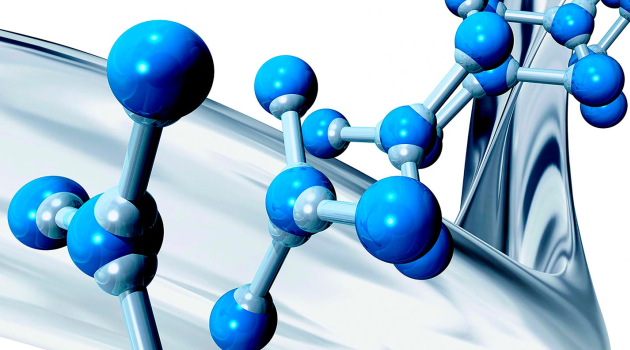

A kémiai informatika (más néven keminformatika, illetve kemoinformatika) olyan tudományterület, amely a számítástudomány és az információtudomány technikáit alkalmazza a kémiai problémák tanulmányozásához és megoldásához. Tevékenységei közé tartozik a kémiai adatok és információk tervezése, létrehozása, kezelése, feldolgozása, begyűjtése, kinyerése, tárolása, rendszerezése, elemzése, előrebecslése, ábrázolása és disszeminációja. A kemoinformatika, a bioinformatika és a számítógépes kémia közötti határok nem állapíthatók meg pontosan, ezért sok az átfedés e területek között.
Gyakran használják hatékony és újszerű gyógyszerhatóanyagok tervezéséhez az orvostudományban, új és előnyösebb tulajdonságokkal rendelkező anyagok kutatásához az anyagtudományban, illetve mezőgazdasági vegyszerek fejlesztéséhez
A bioinformatika biológiai problémák informatikai vizsgálatával foglalkozó interdiszciplináris tudomány, a biológia és az informatika határterülete, a biotechnológia részterülete. A bioinformatika az a tudományág, amely informatikai eszközöket és módszereket alkalmaz a biológiai folyamatok megismerésére, modellezésére és befolyásolására. Bioinformatika: biológia határozza meg a feladatot, az informatika az eszközöket. Az arany biotechnológia a bioinformatika fogalmát foglalja magában.
Hazánkban 2006. március 4-én alapították meg a Magyar Bioinformatikai Társaságot. A társaság célja a magyarországi bioinformatika oktatásának fejlesztése, a magyarországi bioinformatikai kutatások elősegítése, a bioinformatikával foglalkozó biológusok, matematikusok és számítástechnikusok egymáshoz közelebb hozása.